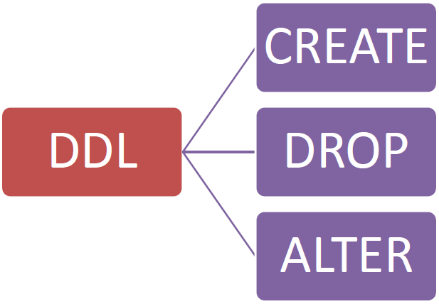

Guia de SQL
Esta página estrutura os principais comandos SQL para manipulação e definição de dados. Pense no SQL como a linguagem que você usa para conversar com um banco de dados, como se fosse uma grande biblioteca digital.
DDL: A Linguagem do Arquiteto
A DDL (Data Definition Language) é o conjunto de comandos que funciona como o arquiteto da biblioteca. Ele não mexe nos livros (os dados), mas sim nas prateleiras e nos armários (a estrutura) que guardam os livros.
-
CREATE (Construir): Usado para construir uma nova "prateleira" (tabela) para guardar os seus dados.
Exemplo:CREATE TABLE Livros (...); -
ALTER (Modificar): Serve para modificar uma "prateleira" que já existe. Se você precisar de um novo espaço ou uma nova etiqueta (coluna), o ALTER faz esse ajuste.
Exemplo:ALTER TABLE Livros ADD COLUMN Ano INT; -
DROP (Derrubar): É para quando você não precisa mais de uma prateleira e decide removê-la por completo. Atenção: ao fazer isso, você também remove todos os livros que estavam nela!
Exemplo:DROP TABLE Livros;
Em resumo, CREATE para construir, ALTER para modificar e DROP para derrubar a estrutura do seu banco de dados.
